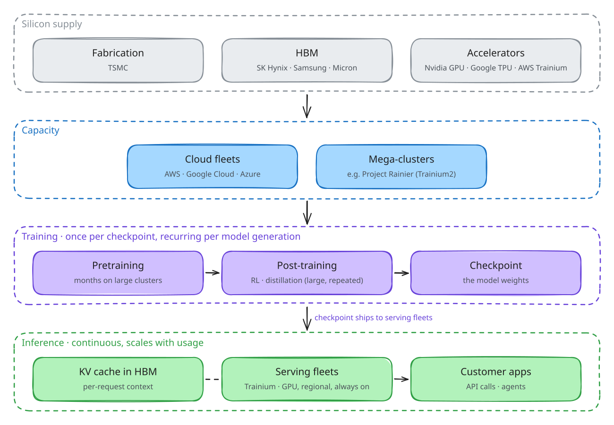
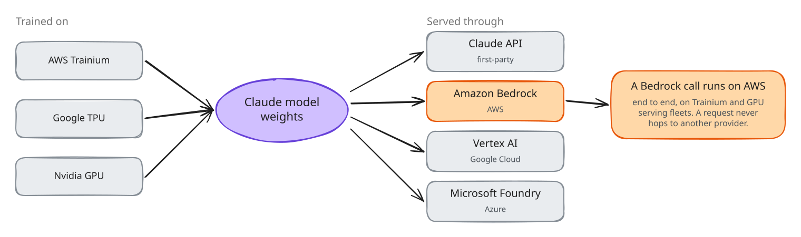
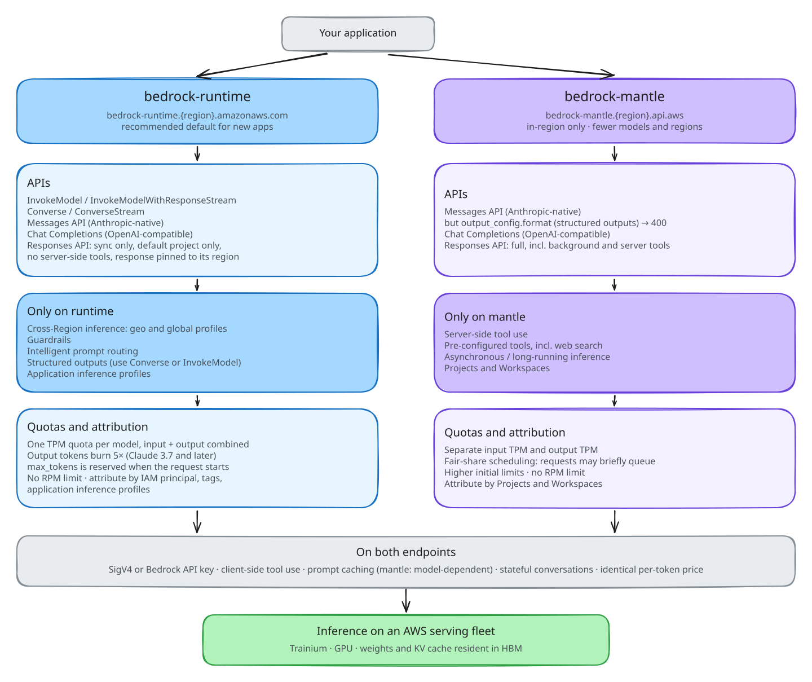
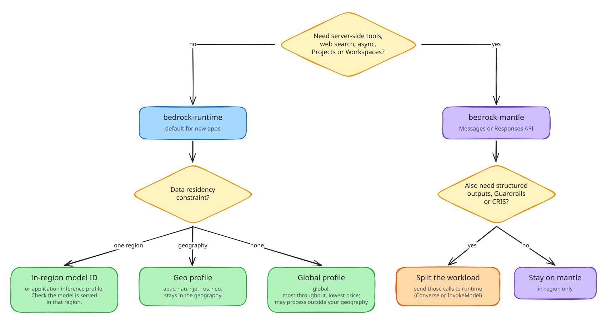
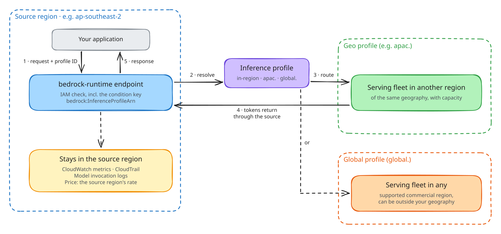
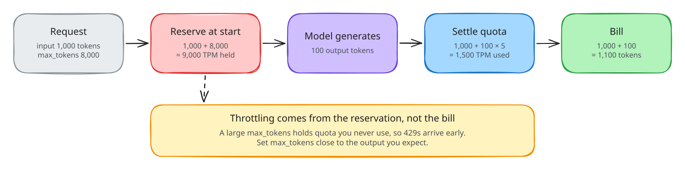
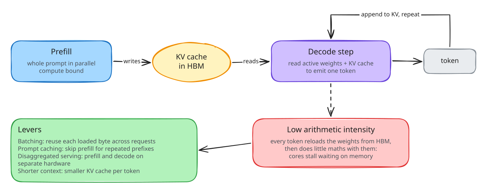

Training is a periodic cost. Inference is the bill that grows with your usage.

Multi-cloud is Anthropic's supply hedge, not your request path. Requests never hop providers.

bedrock-runtime: the default. Cross-Region inference, Guardrails, prompt routing, structured outputsbedrock-mantle: server-side tools, web search, async, Projects and WorkspacesPer-token price is the same on both. Choose on capability, and start on runtime.

apac. au. jp. …) or global.Enforce the profile with an IAM condition on bedrock:InferenceProfileArn, plus an SCP.

Residency is a profile choice you can enforce, not a code change.

max_tokens when the request startsAn oversized max_tokens causes 429s. Set it close to the output you expect.

Batching, prompt caching and shorter context cut both cost and latency.